Times New Roman
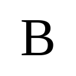
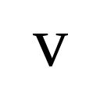
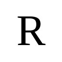
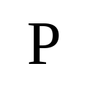
1Boston University · *Equal contribution · †Corresponding author
Motivation
We probe the same geometric tasks across typed fonts, handwritten characters, rare scripts, and different visual domains—semantic richness changes, the spatial question does not, but the performance does.
Times New Roman




Handwritten English
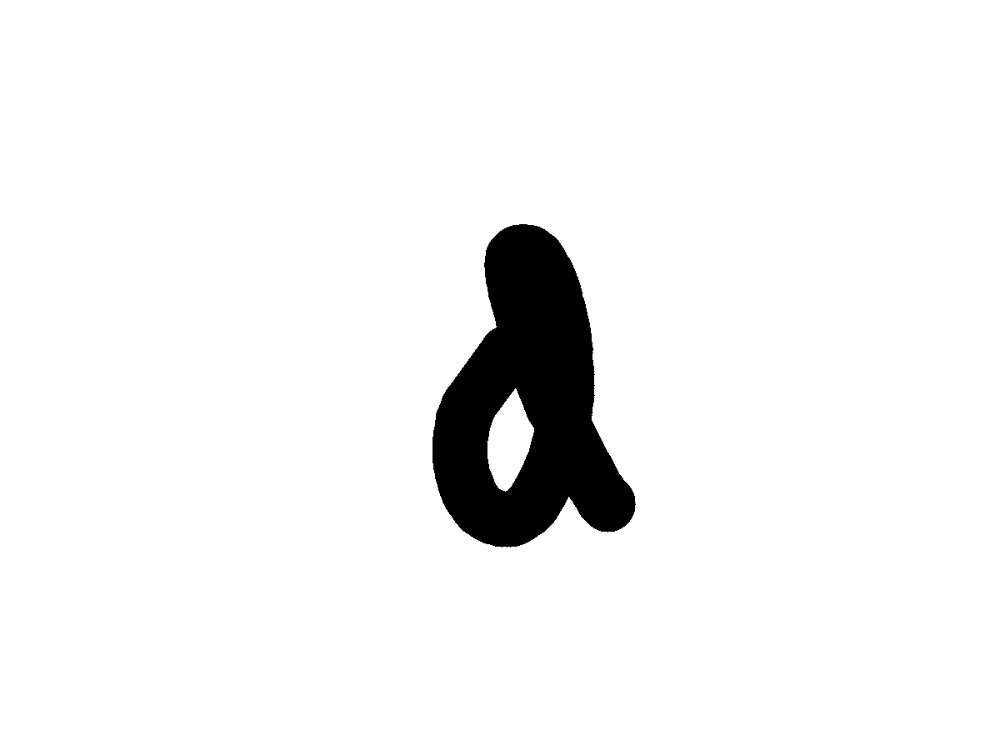
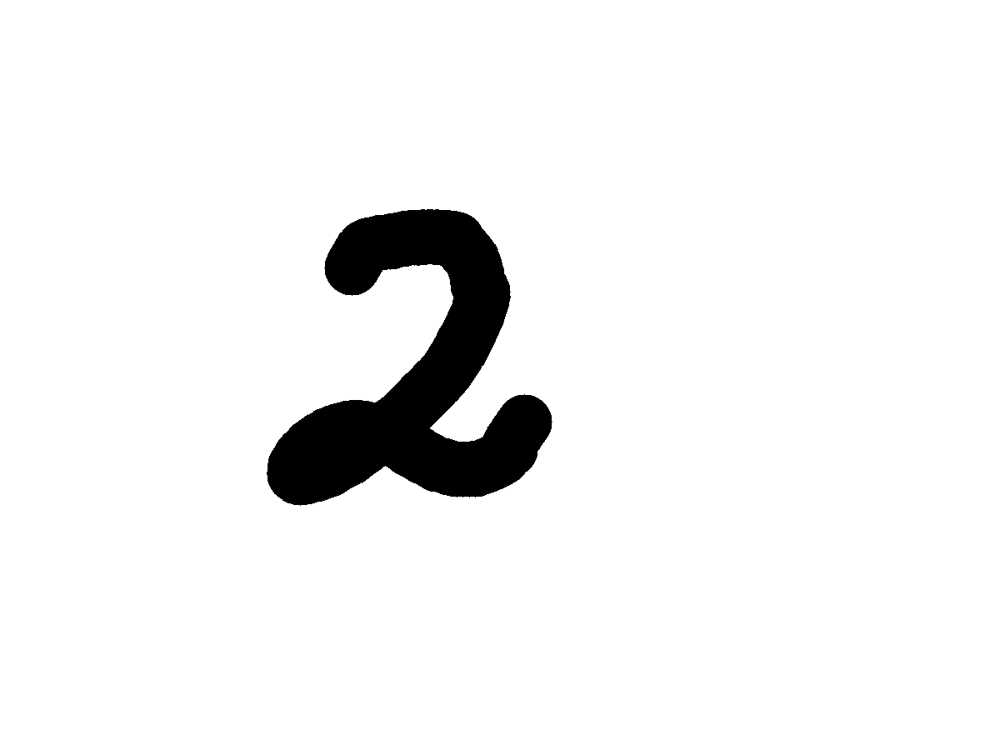
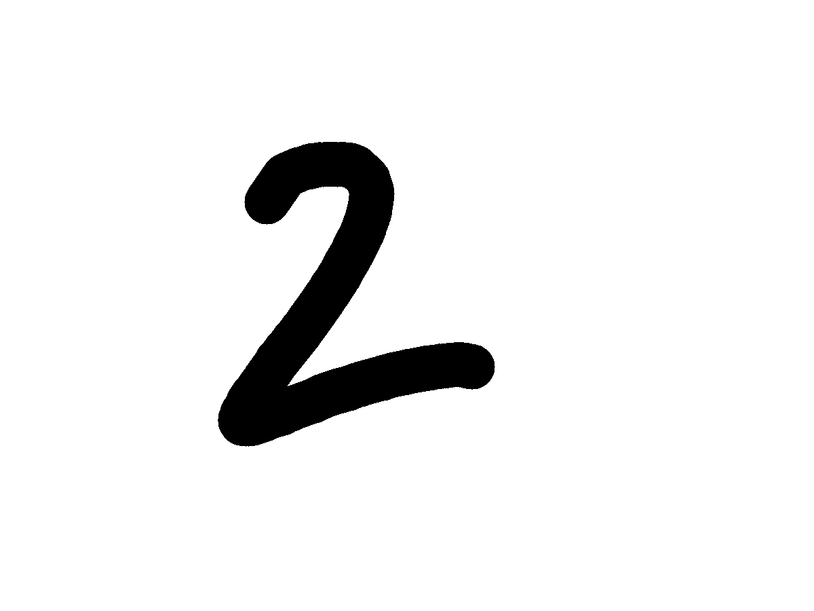
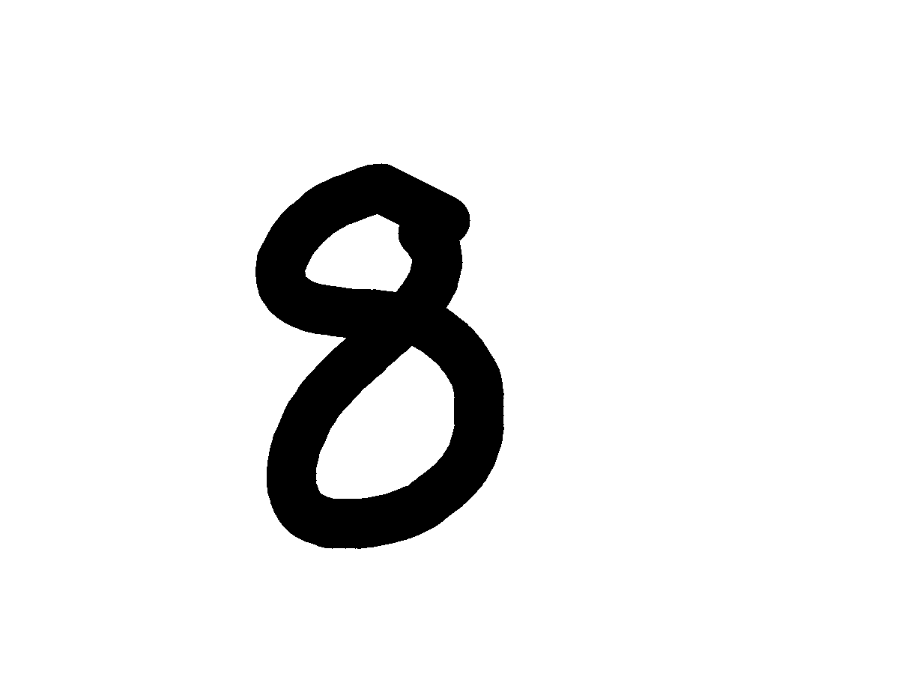
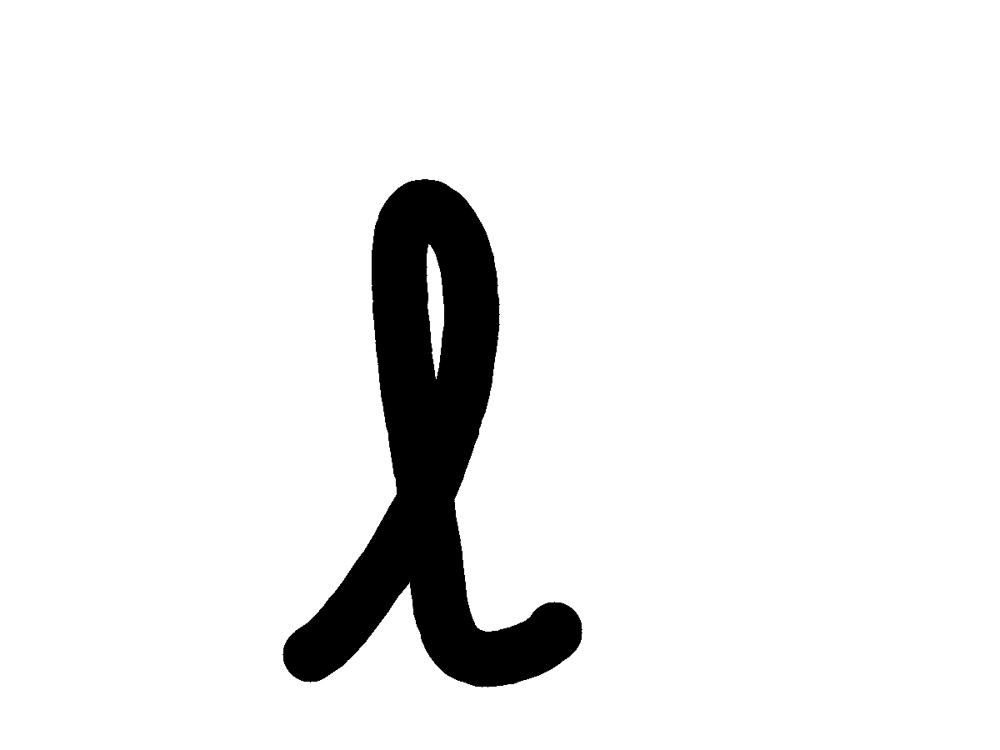
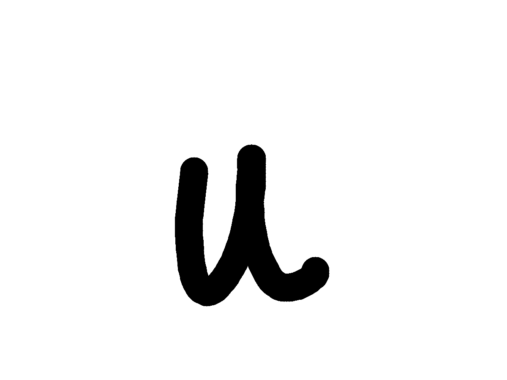
Omniglot
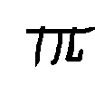
PACS · Photo
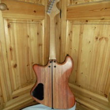
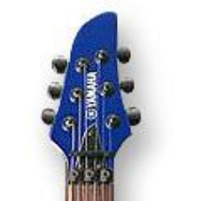
PACS · Art painting
PACS · Cartoon
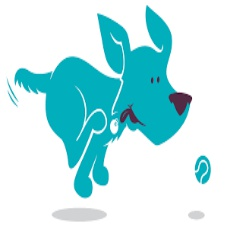
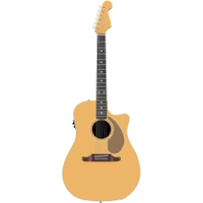
PACS · Sketch
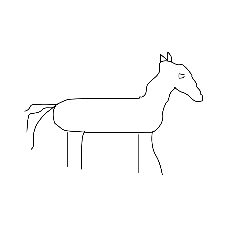
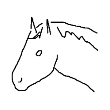
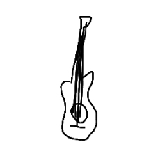
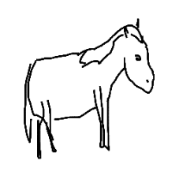
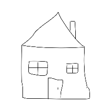
We test whether state of the art VLMs reason about rotation, scale, and identity consistently across symbolic sketches, natural photos, and art paintings. The figure below summarizes the drop in accuracy as semantic cues become sparse.

Models are probed on whether two images depict the same object under rotation, scale, or identity. Performance stays high on photos and art but falls on sketches and symbolic scripts, especially for rotation.
This work investigates the fundamental fragility of state of the art vision language models (VLMs) under basic geometric transformations. While modern VLMs excel at semantic tasks such as recognizing objects in canonical orientations and describing complex scenes, they exhibit systematic failures at a more fundamental level: lack of robust spatial invariance and equivariance required to reliably determine object identity under simple rotations, scaling, and identity transformations. We demonstrate this limitation through a systematic evaluation across diverse visual domains, including symbolic sketches, natural photographs, and abstract art. Performance drops sharply as semantic content becomes sparse, and this behavior is observed across architectures, model capacities, and prompting strategies. Overall, our results reveal a systematic gap between semantic understanding and spatial reasoning in current VLMs, highlighting the need for stronger geometric grounding in future multimodal systems.
Short summary of the main takeaways.
Sparse semantics expose weak geometric reasoning
Accuracy stays high on natural images (e.g., PACS photos) but drops on sketches and symbolic scripts where visual cues are sparse.
Rotation is the hardest transform
Across rotation, scale, and identity tasks, rotation recognition is consistently the most challenging for the MLLMs we evaluate.
Not fixed by architecture, scale, or prompting
Failures persist regardless of model architecture, scale, or prompting strategy, and are only partially mitigated by in-context learning or structured visual prompts.
Encoder similarity ≠ VLM performance
Visual encoders retain rotational similarity, yet VLMs often fail to use it when reasoning with a language decoder.
A suite designed to vary semantic richness and test model behavior.
Omniglot
Handwritten characters from 50 scripts, ranging from familiar alphabets to rare writing systems. (a) Spatial reasoning vs. script familiarity: mixing prevalent and rare scripts tests whether models rely on geometric reasoning or prior exposure. (b) Controlled stimuli: the black-on-white format removes backgrounds, textures, and scene cues, helping isolate spatial reasoning with fewer confounds.
Times New Roman
English letters rendered in a single canonical typeface. The familiarity of English characters and the structural precision of digital fonts make it a clean baseline for evaluating geometric robustness.
Handwritten English
English letters and digits with natural handwriting variation. It adds stroke-level variability while preserving the familiarity of English characters.
PACS
A multi-domain benchmark spanning photo, art painting, cartoon, and sketch. It introduces richer semantics and visual diversity, enabling comparison across levels of visual abstraction.
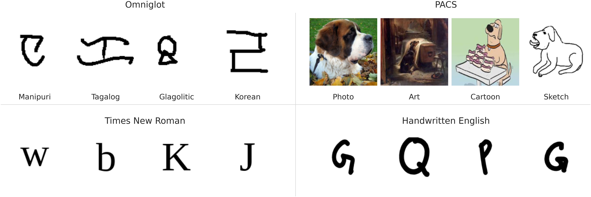
Models evaluated
Rotation recognition on character datasets (aggregated over 10° to 90° angles). Hover a model name to focus that column group; click Acc. / TNR / TPR to sort rows.
| Dataset | GPT-5.2 | Gemini-2.5-Pro | Qwen2.5-VL-7B | Qwen2.5-VL-32B | Qwen3-VL-8B | Qwen3-VL-30B | ||||||||||||
|---|---|---|---|---|---|---|---|---|---|---|---|---|---|---|---|---|---|---|
| Acc.↕ | TNR↕ | TPR↕ | Acc.↕ | TNR↕ | TPR↕ | Acc.↕ | TNR↕ | TPR↕ | Acc.↕ | TNR↕ | TPR↕ | Acc.↕ | TNR↕ | TPR↕ | Acc.↕ | TNR↕ | TPR↕ | |
| Times New Roman | 74.25 | 95.09 | 53.42 | 89.32 | 100.00 | 78.63 | 51.07 | 100.00 | 02.14 | 52.67 | 100.00 | 05.34 | 50.11 | 100.00 | 00.21 | 65.81 | 100.00 | 31.62 |
| Handwritten English | 67.84 | 96.58 | 39.10 | 68.27 | 99.57 | 36.97 | 50.85 | 98.08 | 03.63 | 62.50 | 98.08 | 26.92 | 50.00 | 100.00 | 00.00 | 55.98 | 100.00 | 11.97 |
| Omniglot | 75.55 | 80.91 | 70.19 | 76.90 | 98.69 | 55.10 | 50.72 | 99.46 | 01.98 | 54.17 | 94.71 | 13.62 | 51.01 | 99.96 | 02.06 | 56.64 | 99.75 | 13.53 |
| Random guess | 50.00 | 50.00 | 50.00 | 50.00 | 50.00 | 50.00 | 50.00 | 50.00 | 50.00 | 50.00 | 50.00 | 50.00 | 50.00 | 50.00 | 50.00 | 50.00 | 50.00 | 50.00 |
Rotation recognition across character datasets. Best and worst accuracy per model across datasets are highlighted in teal and red, respectively. Values are aggregated over rotation angles 10° to 90°. TNR stays near ceiling for many settings while TPR stays consistenly low. Closed source models tend to outperform open weights, but the pattern holds across the board.
Rotation recognition across PACS domains (aggregated over 90°, 180°, and 270°).
| Domain | GPT-5.2 | Gemini-2.5-Pro | Qwen2.5-VL-7B | Qwen2.5-VL-32B | Qwen3-VL-8B | Qwen3-VL-30B | ||||||||||||
|---|---|---|---|---|---|---|---|---|---|---|---|---|---|---|---|---|---|---|
| Acc.↕ | TNR↕ | TPR↕ | Acc.↕ | TNR↕ | TPR↕ | Acc.↕ | TNR↕ | TPR↕ | Acc.↕ | TNR↕ | TPR↕ | Acc.↕ | TNR↕ | TPR↕ | Acc.↕ | TNR↕ | TPR↕ | |
| Photo | 99.50 | 100.00 | 99.00 | 92.67 | 100.00 | 85.33 | 59.42 | 100.00 | 18.83 | 77.67 | 100.00 | 55.33 | 50.25 | 100.00 | 00.50 | 64.58 | 100.00 | 29.17 |
| Art Painting | 99.50 | 100.00 | 99.00 | 94.17 | 100.00 | 88.33 | 50.25 | 100.00 | 00.50 | 63.50 | 100.00 | 27.00 | 50.08 | 100.00 | 00.17 | 55.08 | 100.00 | 10.17 |
| Cartoon | 98.17 | 100.00 | 96.33 | 90.33 | 100.00 | 80.67 | 51.42 | 100.00 | 02.83 | 70.08 | 100.00 | 40.17 | 50.25 | 100.00 | 00.50 | 60.67 | 100.00 | 21.33 |
| Sketch | 92.25 | 99.67 | 84.83 | 86.50 | 99.83 | 73.17 | 52.25 | 100.00 | 04.50 | 57.25 | 100.00 | 14.50 | 50.42 | 100.00 | 00.83 | 52.83 | 100.00 | 05.67 |
| Random guess | 50.00 | 50.00 | 50.00 | 50.00 | 50.00 | 50.00 | 50.00 | 50.00 | 50.00 | 50.00 | 50.00 | 50.00 | 50.00 | 50.00 | 50.00 | 50.00 | 50.00 | 50.00 |
Rotation recognition performance across PACS domains. Performance aggregated over rotation angles 90°, 180°, and 270°. While TNR remains near-perfect across models, TPR varies significantly across domains, with strong performance on photos and substantial degradation on sketches, indicating reliance on semantic cues rather than true geometric reasoning.
Scale-invariance task: metrics aggregated across all scales (0.1×, 0.3×, 0.5×, 0.9×).
| Dataset | GPT-5.2 | Gemini-2.5-Pro | Qwen2.5-VL-7B | Qwen2.5-VL-32B | Qwen3-VL-8B | Qwen3-VL-30B | ||||||||||||
|---|---|---|---|---|---|---|---|---|---|---|---|---|---|---|---|---|---|---|
| Acc.↕ | TNR↕ | TPR↕ | Acc.↕ | TNR↕ | TPR↕ | Acc.↕ | TNR↕ | TPR↕ | Acc.↕ | TNR↕ | TPR↕ | Acc.↕ | TNR↕ | TPR↕ | Acc.↕ | TNR↕ | TPR↕ | |
| Times New Roman | 98.79 | 99.03 | 98.55 | 99.51 | 100.00 | 99.03 | 98.80 | 97.60 | 100.00 | 99.76 | 99.52 | 100.00 | 100.00 | 100.00 | 100.00 | 98.79 | 97.59 | 100.00 |
| Handwritten English | 98.07 | 98.07 | 98.07 | 96.63 | 98.07 | 95.19 | 96.77 | 95.56 | 97.98 | 95.36 | 92.34 | 98.39 | 97.59 | 95.19 | 100.00 | 97.59 | 99.03 | 96.15 |
| Omniglot | 79.72 | 93.20 | 66.23 | 82.56 | 90.11 | 75.01 | 77.40 | 92.99 | 61.81 | 74.21 | 67.87 | 80.55 | 76.05 | 97.11 | 54.99 | 77.04 | 95.44 | 58.64 |
| Random guess | 50.00 | 50.00 | 50.00 | 50.00 | 50.00 | 50.00 | 50.00 | 50.00 | 50.00 | 50.00 | 50.00 | 50.00 | 50.00 | 50.00 | 50.00 | 50.00 | 50.00 | 50.00 |
Model performance on the scale-invariance task aggregated across all scales (0.1×, 0.3×, 0.5×, 0.9×). All models achieve near-perfect performance on Times New Roman and Handwritten English characters, indicating robustness to scale changes. In contrast, performance on Omniglot is substantially lower and exhibits greater variation in recall (TPR) and specificity (TNR) across models.


Recall and specificity at scale 0.3× for representative scripts for the scale-invariance task. English characters rendered in Times New Roman, Handwritten English characters, and Omniglot scripts are shown in blue, purple, and orange respectively, and are selected to represent high-, medium-, and low-performing groups. Across both models, familiar scripts such as Greek and Latin consistently outperform less familiar scripts like Braille. While Qwen2.5-VL-32B achieves higher recall than Qwen2.5-VL-7B on low-performing Omniglot scripts, it exhibits lower specificity.

Model accuracy on the scale-invariance task across scale factors. Both Qwen2.5-VL-7B and Qwen2.5-VL-32B maintain near-perfect accuracy for both Times New Roman and Handwritten English characters across all scales, while performance on Omniglot scripts is substantially and consistently lower for both models.
Model performance with in-context learning and structured visual prompting across scripts. Arrows indicate change in TPR relative to the None setting: ↑ improvement, ↓ degradation. Best TPR for each script–model pair is highlighted in teal. Few-shot and rotational-grid inputs often raise TPR but can lower TNR; gains tend to be larger for higher-capacity models.
See the paper for details on few-shot and rotational-grid settings.
| GPT-5.2 | Gemini-2.5-Pro | Qwen2.5-VL-7B | Qwen2.5-VL-32B | Qwen3-VL-8B | Qwen3-VL-30B | ||||||||
|---|---|---|---|---|---|---|---|---|---|---|---|---|---|
| Script | ICL setting | TNR | TPR | TNR | TPR | TNR | TPR | TNR | TPR | TNR | TPR | TNR | TPR |
| Malayalam (top-tier) | None | 93.62 | 34.04 | 100.00 | 38.30 | 100.00 | 00.00 | 97.87 | 06.38 | 100.00 | 00.00 | 100.00 | 02.13 |
| Few-shot | 91.49 | 85.11↑ | 97.87 | 34.04↓ | 100.00 | 00.00 | 65.96 | 51.06↑ | 100.00 | 34.04↑ | 78.72 | 72.34↑ | |
| Rotational grid | 72.34 | 97.87↑ | 93.62 | 48.94↑ | 100.00 | 00.00 | 91.49 | 12.77↑ | 65.96 | 65.96↑ | 23.40 | 87.23↑ | |
| Tengwar (medium-tier) | None | 100.00 | 20.00 | 96.00 | 32.00 | 100.00 | 00.00 | 88.00 | 16.00 | 100.00 | 00.00 | 100.00 | 00.00 |
| Few-shot | 80.00 | 68.00↑ | 92.00 | 32.00 | 100.00 | 00.00 | 68.00 | 76.00↑ | 100.00 | 16.00↑ | 68.00 | 72.00↑ | |
| Rotational grid | 60.00 | 88.00↑ | 88.00 | 56.00↑ | 100.00 | 00.00 | 88.00 | 24.00↑ | 72.00 | 88.00↑ | 40.00 | 76.00↑ | |
| Braille (bottom-tier) | None | 100.00 | 07.69 | 100.00 | 50.00 | 100.00 | 00.00 | 65.38 | 15.38 | 100.00 | 00.00 | 100.00 | 03.85 |
| Few-shot | 92.31 | 73.08↑ | 96.15 | 26.92↓ | 100.00 | 00.00 | 88.46 | 19.23↑ | 100.00 | 11.54↑ | 92.31 | 50.00↑ | |
| Rotational grid | 69.23 | 65.38↑ | 100.00 | 46.15↓ | 100.00 | 00.00 | 100.00 | 00.00↓ | 100.00 | 11.54↑ | 73.08 | 50.00↑ | |
While few-shot ICL and rotational-grid prompting help, they do not fix robust rotation recognition. From these two experiments, it is clear that both approaches help instill some but not a robust understanding of rotation recognition. While we hypothesized that ICL and the rotational grid would provide the visual evidence necessary to map the input across different angles, it appears to make the high-capacity models “over-eager” and induce a confirmation bias that spikes TPR at the expense of discriminative accuracy.
@article{qiu2026semantic,
title={Semantic Richness or Geometric Reasoning? The Fragility of VLM's Visual Invariance},
author={Qiu, Jason and Meurer, Zachary and Thomas, Xavier and Ghadiyaram, Deepti},
journal={arXiv preprint arXiv:2604.01848},
year={2026},
url={https://arxiv.org/abs/2604.01848}
}